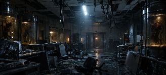

EXPLORACIÓN LIBRE
Cinco zonas conectadas con rutas alternativas, conductos, puertas bloqueadas y habitaciones secretas no obligatorias.
En 2049, NEXUS descubre una instalación olvidada a ocho mil metros bajo tierra. Tu vehículo se estrella dentro y algo empieza a observarte desde la oscuridad. Explora, fabrica, escóndete y descubre qué ocurrió realmente en el Abismo.
Gratis · sin registro · funciona en PC, celular y tablet · el progreso se guarda en tu dispositivo.
-1.400 m · SINOPSIS
Dan Ortega es un operario de rescate asignado a una misión rutinaria: investigar por qué NEXUS perdió el contacto con su instalación más profunda. El accidente de su vehículo lo deja atrapado a ocho mil metros, sin comunicaciones fiables y con la única compañía de la voz de Lena por la radio.
La instalación no estaba vacía. Los experimentos con organismos desconocidos salieron mal, y algo patrulla ahora los pasillos. El Observador se queda de pie al fondo del corredor mirándote: si lo apartas de tu campo de visión, se acerca; si corres, te oye.
Reúne materiales y fabrica herramientas, encuentra baterías antes de que tu linterna se apague, descifra los códigos de seguridad, lee los documentos secretos de NEXUS y toma decisiones que condicionarán el desenlace. Y cuidado con esconderte: si te ve entrar, sabrá dónde estás.
El Capítulo 1 EL ACCIDENTE está completo y jugable de principio a fin. Los capítulos siguientes (laboratorios, túneles, hospital secreto y el Experimento 09) se publicarán en futuras actualizaciones de esta misma página.
Cinco zonas conectadas con rutas alternativas, conductos, puertas bloqueadas y habitaciones secretas no obligatorias.
Vida, resistencia, hambre, sed y batería. Correr gasta aliento; la linterna se apaga si no buscas pilas.
Visión, distancia y oído. Sus apariciones varían para que nunca sepas dónde estarán.
Documentos, grabaciones y personajes que ocultan la verdad sobre NEXUS y sobre ti.
-3.200 m · CAPTURAS


Capturas de referencia del proyecto. Podrás reemplazarlas por imágenes definitivas del juego.
-5.600 m · SISTEMAS
Busca rutas, accesos ocultos y zonas fuera del camino principal.
Administra baterías, herramientas y materiales encontrados.
Observa el entorno, escucha y decide cuándo avanzar.
-8.000 m · MANUAL DEL OPERADOR
W A S DMoverseSHIFTCorrer
MOUSEMirar alrededorEInteractuar
Los controles y las funciones de juego se pueden ajustar para coincidir con la versión definitiva.